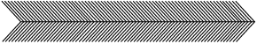

This is my
life.
I do what I love,
and I will do it often.
I have a right to change my life for the better.
I'm not a quitter - I just need breaks.
If I don't have enough time, I need to assess my goals.
I am my own
hero.
I love myself.
I shouldn't try to change those
I love, because love
is the acceptance of
being human.
I need to say "I love you" more.
Forget the drama.
All my emotions are under control.
Don't be afraid of food.
But don't overeat.
I can be open-minded, & open-hearted to change.
I will make mistakes. but I can learn from them.
I refuse to miss
opportunities
because of fear.
If I live with
passion
others will
follow.
It doesn't cost
extra to dream
big.
perserver
Getting lost can help
me find who I really am.
I have beautiful talents. I am creative.
Life is
mine.
I am a child of God.
My life has worth.